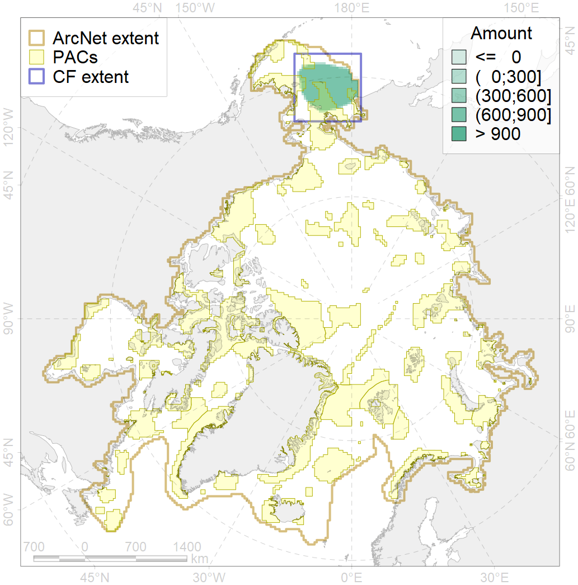
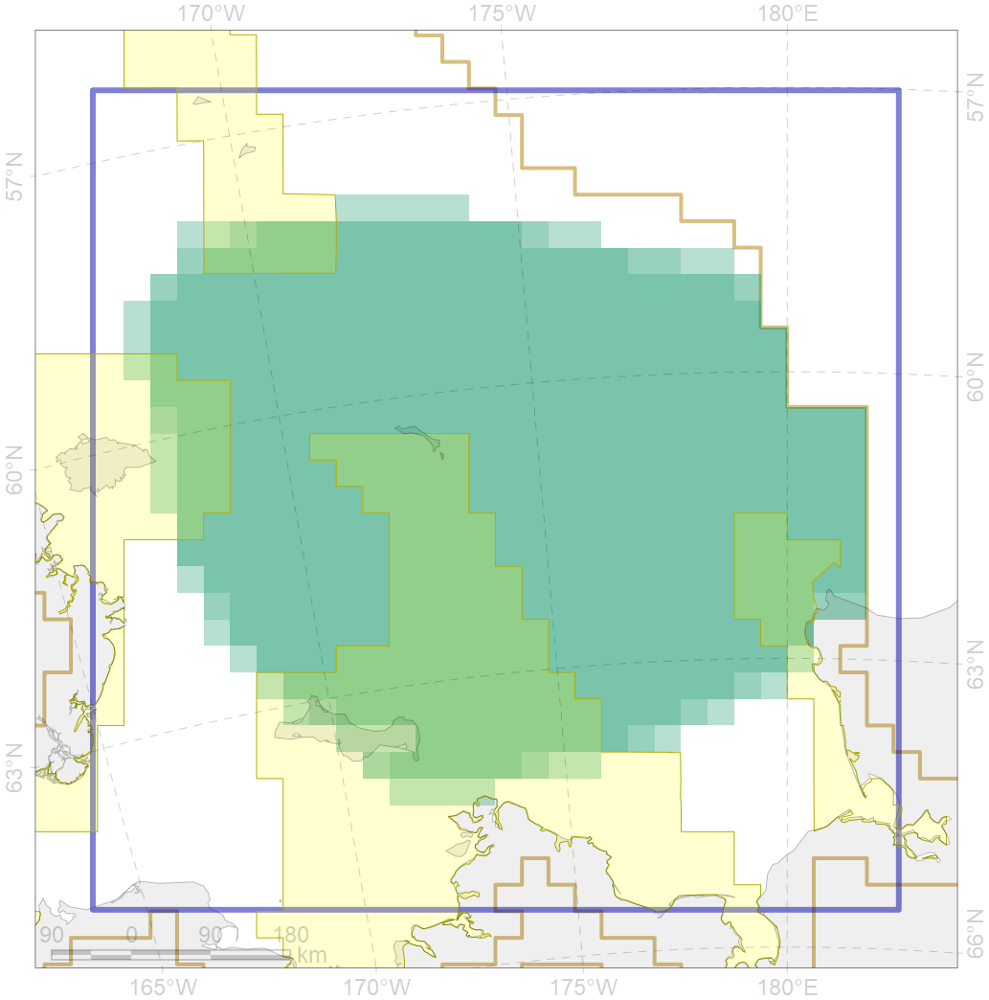

6039

| CF code | 6039 |
| CF name | Ivory gull (Pagophila eburnea) Pacific wintering grounds |
| Time Period | 1990-2009 |
| Source(s) | Gilg et al 2010 |
| Seasonality | November-March |
| Depth Horizon | >0 m |
| Methodology | Field Data |
| Use Restrictions | Open source |
| Author Name | Gavrilo, Tertitski |
| Notes | |
| Scenario’s Target | 0.216 |
| Target Achievement | 0.289 (Scenario: 133.6%) |
| PAC | Share of the Total Amount within the PAC | Share of the Target Achievement for the ArcNet | PAC’s Contribution to the Target Achievement |
|---|---|---|---|
| 2 | 1.8%2.3% | 4.4%4.8% | 3.3%3.6% |
| 3 | 3.0% | 11.6% | 8.6% |
| 4 | 3.2%3.5% | 12.2%13.6% | 9.1%10.2% |
| 5 | 18.8%18.8% | 80.6%80.6% | 60.4%60.4% |
| inner | 26.8%27.6% | 108.8%110.6% | 81.4%82.8% |
| outer | 73.2%75.5% | 24.8%31.2% | 18.6%23.3% |
| † supplement values are for area consistence whereas principal values are for Accenter compatible gridded stats |